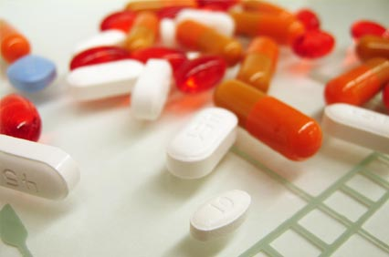

CHOP is a Drug-Free Workplace
The goals of CHOP’s Drug-Free Workplace Policy are to:
- Maintain a workplace free from the possession, manufacture, sale, purchase, distribution, or use of prohibited drugs or alcohol.
- Provide resources for all employees who may need help with substance abuse.
- Identify appropriate corrective action for employees who violate the Drug-Free Workplace Policy.
This policy applies to all employees, all of the time. Under no circumstances should an employee come to work under the influence of any substance that can impair one’s physical state, behavior, performance, and/or judgment. This policy also applies to entities affiliated with CHOP including, but not limited to: Children’s Health Care Associates, Children’s Anesthesiology Associates, Children’s Surgical Associates, Radiology Associates of Children’s Hospital, and their New Jersey counterparts.
Drug-Free Matters
Drug-Free Matters for Safety
CHOP is committed to maintaining a safe, drug-free workplace for the benefit of patients and families. Read about the ways a drug-free environment contributes to safety at CHOP.
Employees contribute their best work
and uphold CHOP’s high standard of care.
Reliable judgments,
decisions, and responses are made relating to patient care, minimizing the risk of safety errors.
Our patients trust us.
Our reputation grows toward our goal to be the safest children’s hospital.
Professional and therapeutic relationships develop:
coworkers, patients, and families all depend on our professionalism.
Drug-Free Matters for You
Your health and wellbeing are also a priority at CHOP. Read about how a problem with drugs or alcohol can affect you.
Physical and mental health suffers
as a result of the misuse of drugs and alcohol. It takes its toll on your brain and body and may even lead to death.
All relationships,
including families and friends, are often the victims of drug and alcohol abuse.
Employment and licensure can be lost
with the misuse of drugs and alcohol, leading to mandatory leave, termination, and loss of licensing and/or professional credentials.
Freedom to live your life can be taken away
as certain behaviors linked to drug use and addiction, such as diverting drugs, are illegal and can lead to imprisonment.
Impairment
Impairment is a person’s condition when drugs and/or alcohol interferes with one’s professional judgment, safe work practices, and responsible behavior in the workplace. Legal substances can cause impairment as well, such as excessive alcohol use or the misuse of over-the-counter and prescription drugs.
Review the examples of signs/symptoms that might indicate that someone is impaired or has an issue with drugs or alcohol:
Signs that Jeopardize Safety
- Is error prone; misses signs of distress; may leave patients or work unattended
Signs Relating to a Person's Performance
- Is late or absent often; goes missing from the unit
Signs You Can See - A Person's Physical State
- Sweats or has tremors (impending withdrawal)
Signs Showing Changes in a Person's Personal Life
- Alienated friends and colleagues
Scenario: What if I Drank Last Night?
Let’s take a look at an example of a legal substance that can cause impairment.
Employees are expected to have a blood alcohol level of zero (0.00) while at work.
You stop drinking
2:00 AM
Blood Alcohol Level:
.15% - .20%
Legallydrunk
You're in bed
4:00 AM
Blood Alcohol Level:
.08% - .10%
Legallydrunk
You drive to work
7:00 AM
Blood Alcohol Level:
.05%
Mild
Intoxication
You arrive at work
7:45 AM
Blood Alcohol Level:
.02%
Impaired
Potential Consequences of Impairment

Impairment may lead to addiction...
Addiction is a chronic, often relapsing brain disease that causes compulsive drug seeking and use, despite harmful consequences to the addicted individual and to those around him or her. Abuse and addiction can exist for a long time before impairment becomes apparent in the workplace.
Addiction can lead to diversion...
Diversion, the theft of any drug at CHOP, is a violation of the law and cause for immediate termination. Law enforcement, as well as regulatory, licensing and credentialing bodies oversee these cases to determine further penalties.
Chop's Policy Supports Action
1
Have you ever suspected a coworker may be impaired and you did nothing?
If you answered yes, this is called Zero Action! What stopped you from reporting?
What are the consequences for doing nothing?
2
Have you ever covered up, made excuses, or completed work for another coworker knowing he/she may be impaired?
If you answered yes, this is called Gloss Over Action! You may attempt to protect a coworker’s career or reputation but this comes at the expense of the health and wellbeing of the person who is impaired and the safety of patients.
3
Have you thought about reporting someone who seemed impaired but were concerned you might be wrong?
You have the right to exercise “reasonable suspicion” if you suspect a coworker is impaired, and report your concerns to your manager. Reasonable suspicion is more than a “hunch” or feeling about a person; it is based on a person’s behavior and any observable signs or symptoms of impairment.
Reasonable Suspicion
Reasonable suspicion is when an employee has a sound belief that another employee is using or is under the influence of drugs or alcohol. This suspicion should be based on the following:
- Specific physical, behavioral, or performance indicators
(what did you see or hear that leads you to this belief?) - Evidence of repeated errors on the job
- Hospital rule violations
- Unsatisfactory time and attendance patterns
- Behavior or actions that differ from normal behavior or actions under the circumstances
- Inappropriate or disoriented behavior
Reporting Reasonable Suspicion
Communicate your reasonable suspicion to your manager who will then work with an HR Business Partner to better determine next steps to ensure the safety and wellbeing of all. This may include removing the individual from his/her work and initiating “for cause” testing through the office of Occupational Health.
Your Responsibility
It is every employee’s responsibility to report a coworker who may be impaired, who is suspected of having an ongoing problem with drugs/alcohol, or who may be engaging in diversion (stealing drugs from CHOP). No Action or Gloss Over Action are common because employees may not feel confident in their suspicions or they feel sympathetic toward their coworker. Don’t contribute to inaction and put patient and employee safety at risk!
How can I help myself if I have a problem?
1 Stress and depression can often lead to the misuse of prohibited substances. Incorporate wellness activities into your life.
2 Speak to your doctor to identify your specific health issues.
3 Seek assistance from the Hospital’s Employee Assistance Program or the Physician Health Program in confidence.
Managers: Helping Your Staff
As a manager, when you become aware of impairment:
- Evaluate the safety of patients.
- Consult your resources including your HR Business Partner, Occupational Health Department (OHD), and policy A-4-23: Drug-Free Workplace (Appendix A – For Cause Drug Testing, Appendix B – Observation Form) on CHOP’s intranet.
You reasonably suspect impairment. What’s next?
- Record observations via observation form.
- Consult with OHD and HR.
- Escort employee to OHD for evaluation and potential testing. If after hours (between 4pm-8am and weekends), contact Security for assistance. For locations outside CHOP’s Main campus, managers should take employees to the nearest hospital or emergency care facility.
- Remove employee from work pending results.
- Arrange for transportation to take the employee home. The employee should not be allowed to operate any type of motor vehicle.
Additional Help and Information
The Employee Assistance Program (EAP)
The Employee Assistance Program (EAP) is a resource provided by CHOP through Penn Behavioral Health. The EAP can assist with issues and challenges that may arise in your personal or professional life. Services are available 24 hours a day, 7 days a week.
Call 1-888-321-4433 or
visit Penn Behavioral Health online at
Intranet Keyword Search: EAP